Практичний досвід · журнал «ДентАрт» 2017 №3
Використання Закису Азоту Кисневої Седації (ЗАКС) на дорослому і дитячому прийомі
NITROUS OXIDE SEDATION IN DENTAL TREATMENT
«Седація у притомному стані» — ефективний і безпечний метод зняття тривожності та страху у дітей і дорослих, який може застосовуватися практично без обмежень у будь-якому з напрямів сучасної стоматології. Без додаткових затрат часу інгаляція закису азоту/кисню дозволяє виконати більший обсяг робіт і провести лікування без стресу для пацієнта і для лікаря.
Незважаючи на стрімкий розвиток стоматології, багато дорослих і дітей відчувають страх і тривогу при відвідинах стоматолога. Іноді ми стикаємося з дентофобією – сильно вираженим, неконтрольованим страхом стоматологічного лікування (фото 1). Причиною може бути невдалий досвід попереднього стоматологічного лікування, очікування негативних подій, а також страх, який передається від батьків дітям. Для лікаря і його команди страх і напруга у пацієнта не лише збільшують ризики і тривалість маніпуляцій, а й створюють додатковий стрес і навантаження при виконанні своєї роботи. Тому подолання тривожності і створення комфорту для пацієнта – важливе завдання сучасної дитячої і дорослої стоматології.
Одним із методів боротьби з тривожністю і страхом під час стоматологічного лікування у дітей та дорослих є седація «звеселяючим газом» (фото 2). Безумовно, обсягу цієї статті не вистачить, щоб розповісти про всі тонкощі роботи за цією технологією, але основні напрямки і техніки використання буде описано.
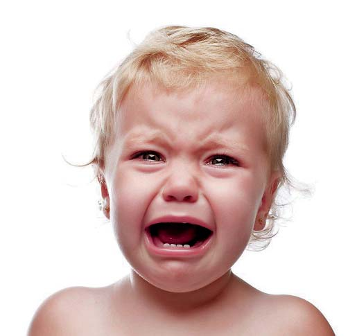
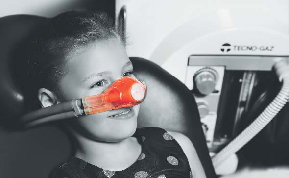
Фото 1. Фото 2.
Седація закису азоту, або «седація у притомному стані», надійно увійшла у стоматологічну практику багатьох розвинених країн світу: США, Німеччини, Австрії, Італії та ін., але є відносно новою технологією для України. Раніше «звеселяючий газ» широко використовувався у високих концентраціях (80% N₂O/20% O₂) як засіб для загальної анестезії. Однак у всьому світі у стоматології закис азоту використовується переважно в низьких (до 50%) концентраціях, оскільки вже на цій стадії анксіолізис і релаксація досягаються сповна.
Закис Азоту Киснева Седація (ЗАКС) регулярно застосовується у стоматології з 1948 року, понад 80% дитячих стоматологів лікують дітей з використанням закису азоту, і понад 50% медичних маніпуляцій робляться з використанням закису на дорослому прийомі. Згідно з протоколом American Academy of Pediatric Dentistry (AAPD) і Council of European Dentists, інгаляційна седація з використанням закису азоту і кисню визнана ефективним і безпечним методом, який застосовується для зменшення тривожності, збільшення аналгезії та підтримки комунікації між лікарем і пацієнтом протягом усієї лікувальної процедури.
Закис азоту – безбарвний газ без запаху із трохи солодкуватим присмаком. Він має кілька механізмів дії. Ефект аналгезії досягається за рахунок активації власних опіоїдних рецепторів та вивільнення ендогенних опіоїдних пептидів. Анксіолітичний ефект пов'язаний з активацією GABAA рецепторів, у результаті чого відбувається посилення гальмівного впливу і пригнічення міжнейронної передачі у ЦНС. Закис азоту не зв'язується з гемоглобіном, практично не піддається біотрансформації і виводиться у незмінному вигляді – 99% через легені і 1% через шкіру.
Показання до застосування ЗАКС:
- тривожні, неспокійні пацієнти;
- дорослі і діти з особливими потребами;
- підвищений блювотний рефлекс;
- налаштовані на співробітництво діти з тривалим лікуванням;
- пацієнти, яких неможливо повністю знеболити;
- тривалі маніпуляції (операції імплантації, видалення зубів).
Протипоказання для застосування ЗАКС:
- хронічні обструктивні захворювання легенів;
- перший триместр вагітності;
- тяжкі емоційні розлади;
- лікування блеоміцин сульфатом;
- дефіцит В12;
- захворювання середнього вуха, синусити, гострі травми голови.
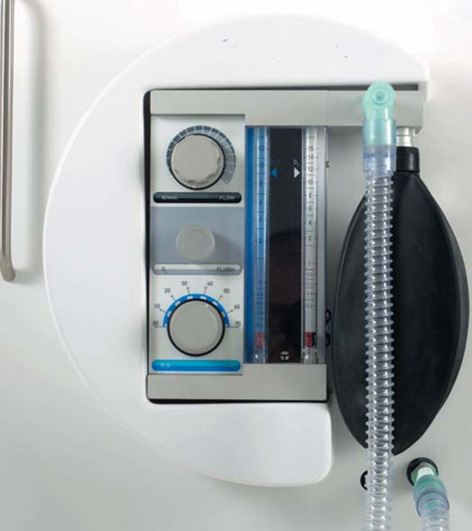
Згідно з American Society of Anesthesiologists (ASA), глибина седації може бути мінімальною, середньою і глибокою.
Ступінь I – мінімальна седація (анксіолізис, легка седація)
Медикаментозно викликаний стан мінімально пригніченої свідомості. Хоча когнітивні функції і координація можуть бути погіршені, функції дихання і серцево-судинної системи не порушені. Мінімальна седація відбувається, як правило, при роботі на концентраціях закису азоту менших, ніж 50%. Пацієнт повноцінно реагує на вербальні команди.
Ступінь II – помірна седація
Медикаментозно викликаний стан депресії свідомості. Пацієнти реагують на вербальні і/або тактильні подразнення. Дихальні рефлекси і спонтанне дихання не порушені. Функція серцево-судинної системи не порушена. Помірна седація досягається, як правило, концентраціями закису азоту більш ніж 50%.
Ступінь III – глибока седація
Медикаментозно викликаний стан депресії свідомості, при якому пацієнти не можуть бути легко пробуджені, але реагують на болісну стимуляцію. Спонтанне дихання може бути порушене. Захисні рефлекси пригнічені частково або повністю. Загалом «звеселяючий газ» сам по собі не може індукувати глибоку седацію.
У стоматологічній практиці рекомендовано використовувати мінімальний ступінь седації – у зв'язку з тим, що за такої концентрації вже досягається виражена релаксація, а при застосуванні у концентраціях понад 50% зростає ризик можливих ускладнень. Однак для проведення неприємних і болісних процедур (люксація, укол голки і т.д.) можливе тимчасове підвищення концентрації понад 50%.
Подача суміші закису азоту здійснюється спеціальним обладнанням. Апарат являє собою вузол подачі і управління газами, який дозволяє регулювати співвідношення кисню і закису азоту у суміші газів, що вдихається, а також резервний мішок, дихальний контур з носовою маскою і джерело газів (балони або централізована система) (фото 3). Гази, які видихає пацієнт, евакуюються високошвидкісним аспіратором.
Усі апарати для ЗАКС оснащені системою безпеки:
- Мінімальна концентрація кисню у суміші, яка вдихається, завжди становить 30%, що запобігає ризику розвитку гіпоксії та аноксії.
- Надходження закису азоту в контур припиняється автоматично у разі відсутності кисню.
- Спеціальний клапан запобігає потраплянню суміші, що видихається, назад у контур.
- Контур видиху під'єднується до системи аспірації стоматологічної установки, тим самим знижуючи потрапляння закису азоту в приміщення.
Працюючи з дитиною, важливо пам'ятати, що успішне використання ЗАКС можливе лише у поєднанні із застосуванням техніки управління поведінкою. В ігровій формі провадиться підбір і примірювання маски. На дитячому прийомі використовуються кольорові й ароматизовані маски, тому діти із задоволенням беруть участь у їх виборі (фото 4-6).
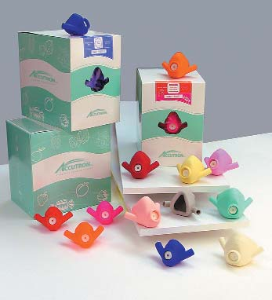
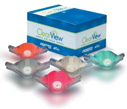
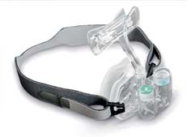
Фото 4. Фото 5. Фото 6.
Правильний вибір маски, її герметизм дуже важливі не лише для зручності пацієнта, але й для безпеки персоналу. За щільного прилягання маски унеможливлюється витікання закису азоту, що дозволить операторові працювати на нижчих концентраціях, а закису азоту – не накопичуватися в кабіні (фото 7, 8).
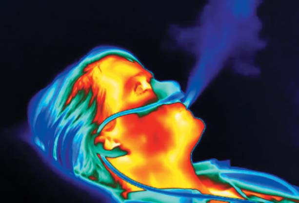
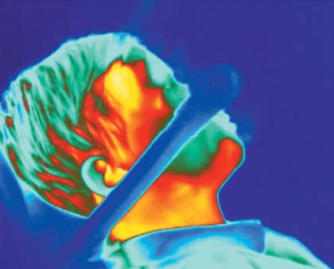
Фото 7. Фото 8.
Введення у стан починається з подавання 100% кисню протягом 1-2 хв зі швидкістю потоку 4-8 л/хв, що залежить від респіраторного об'єму пацієнта. Кожні 1-1,30 с концентрація закису азоту в суміші підвищується на 10%, досягаючи максимальної концентрації 50%. Найоптимальніша робоча концентрація закису азоту в суміші – 30-40%, кисню – 70-60%. Після закінчення роботи подають 100% кисень протягом 5 хв.
Застосування ЗАКС дозволяє комфортно для лікаря і пацієнта за одне відвідування виконати тривалі і складні маніпуляції: у дітей – лікування пульпіту з відновленням, реставрацію кількох зубів; у дорослих – встановлення кількох імплантатів, атипове видалення. Зручне положення тіла, відкриті руки, приємний настрій, сонливість, відсутність опору, зниження рухової активності, почуття повного розслаблення – усе це клінічні симптоми ЗАКС (фото 9). Пацієнт перебуває при повній притомності і повноцінно реагує на тактильні і вербальні команди (фото 10).
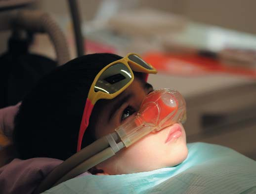
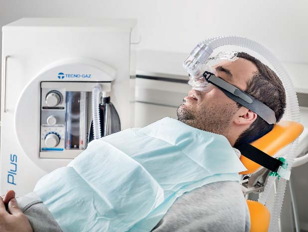
Фото 9. Фото 10.
Моніторинг
Відповідь пацієнта на вербальні команди служить контролем рівня седації. Під час процедури робиться клінічний моніторинг: частота дихання, прохідність дихальних шляхів, реакція на тактильні подразники, контроль кольору шкіри і слизових оболонок. Крім цього, провадиться моніторинг рівня сатурації (насиченість крові киснем — не менше 95%).
Несприятливі ефекти і недоліки ЗАКС
N₂O/O₂ – ефективний і безпечний метод седації за умови правильного вибору пацієнта, наявності навченого персоналу і справного обладнання. Нудота і блювання – найчастіші ускладнення, що зустрічаються у 0,5% пацієнтів. Вони є наслідком тривалого застосування ЗАКС, а також високих концентрацій N₂O в суміші. За 2 години до седації рекомендоване легке вживання їжі. Як наслідок швидкого вивільнення закису азоту з крові в альвеоли, може виникнути дифузна гіпоксія. Це може призвести до головного болю та дезорієнтації. Для усунення цих симптомів рекомендоване більш тривале подавання 100% кисню.
Клінічний випадок 1
Пацієнт 3 р. 5 міс. звернувся з мамою зі скаргами на наявність зруйнованих зубів. Зі слів мами, зуби руйнувалися поступово протягом кількох місяців. У зв'язку з юним віком пацієнта в іншій клініці зробили одноразове покриття зубів розчином нітрату срібла, тому що провести повноцінне лікування малюк не давав.
Хлопчик відчував занепокоєння при першому знайомстві й огляді, однак ішов на контакт з лікарем. В результаті огляду було встановлено діагноз: гострий середній карієс зубів 52, 62; гострий глибокий карієс зуба 51; гострий поверхневий карієс зуба 61 (фото 11-13). У зв'язку з тривалим лікуванням, а також маленьким віком пацієнта мамі було запропоновано варіант лікування в умовах ЗАКС. У разі неможливості повноцінно і якісно провести лікування – санація порожнини рота під загальним знеболенням.
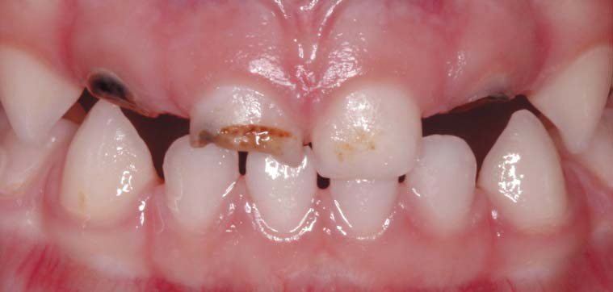
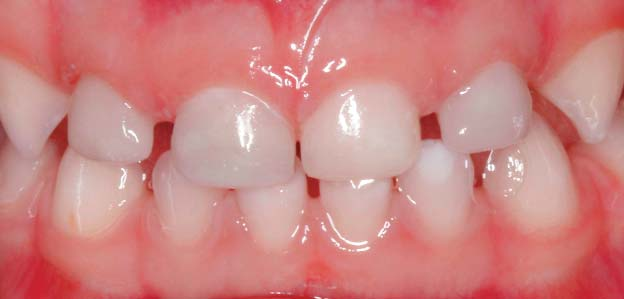
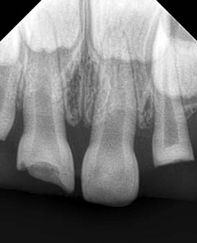
Фото 11-13.
Протокол лікування: в умовах ЗАКС за максимальної концентрації 50%, робочої концентрації 35% було зроблено анестезію, накладено рабердам, проведено реставрацію зубів 52, 61, 51, 62 Ceram X DB, Tetric-N-Ceram A1. Тривалість лікування – двічі по 1 годині (фото 14). Нині санація ротової порожнини триває в умовах ЗАКС, хлопчик налаштований позитивно і з задоволенням чекає наступного візиту.

Клінічний випадок 2
Пацієнтка 30 років, не курить, звернулася зі скаргою на розфіксацію коронки на нижній щелепі праворуч. Зуб 46 раніше лікований ендодонтично, відновлений композитним матеріалом (фото 15, 16). Помітне забарвлювання по краях реставрації, тверді тканини зуба на дистально-апроксимальній поверхні відсутні. Слизова оболонка між зубами 46, 47 ціанотична, кровоточивість при зондуванні. При аналізі рентгенограми бачимо велику деструкцію кісткової тканини на ділянці нижньої і середньої третини дистального кореня. Норицевий хід у проекції коренів цього зуба відсутній, хворобливих відчуттів пацієнтка не зазнає.
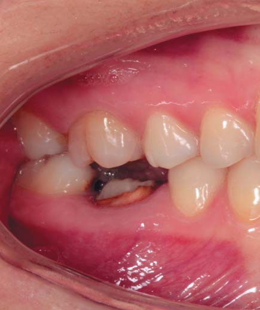
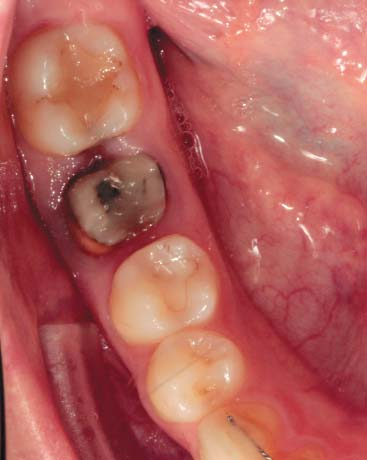
Фото 15. Фото 16.
Було запропоновано різні варіанти лікування: видалення з подальшою імплантацією; повторне ендодонтичне лікування з хірургічним подовженням клінічної коронки зуба; видалення зуба з подальшим виготовленням мостовидного протеза з опорою на зуби 45 і 47. Було обрано варіант із заміщенням зуба 46 імплантатом як найбільш прогнозований і зубозберігаючий. Після аналізу КПКТ прийнято рішення про одномоментне встановлення імплантата в лунку видаленого зуба (фото 17). Пацієнтка відчувала сильну тривогу, двічі скасовувала візит перед операцією. Від внутрішньовенної седації вона відмовилася. Була запропонована Закис Азоту Киснева Седація, пацієнтка поінформована про суть маніпуляції, усі переваги та недоліки. Ін'єкції анестетика, видалення коренів зуба, остеотомія робилися за концентрації закису азоту в суміші 50%, розрізи, установка імплантата – 40% і ушивання – 30% закису азоту з поступовим зниженням концентрації до 0%.
Протокол операції
В умовах інгаляційної седації ЗАКС під інфільтраційною анестезією зроблені інтрасулькулярні розрізи на ділянці сусідніх зубів, відкинутий повношаровий клапоть, розділені корені зуба 46 і видалені атравматично з використанням періотомів. Проведено кюретаж лунки, видалена періапікальна патологія і надіслана на гістологічне дослідження. Лунка оброблена 0.12% хлоргексидину біглюконат. У зоні фуркації проведено остеотомію і встановлено імплантат Straumann BLT діаметром 4.1 мм, довжиною 10 мм з первинною стабілізацією 50 Н/см (фото 18, 19). Встановлено формувач ясенної манжети, лунки коренів видаленого зуба заповнено трансплантаційним матеріалом з натуральної бичачої кістки (Cerabone, botiss), укрито колагеновою мембраною (Collprotect, botiss). Проведено мобілізацію щокового клаптя, рану ушито шовним матеріалом Seralene 6-0.
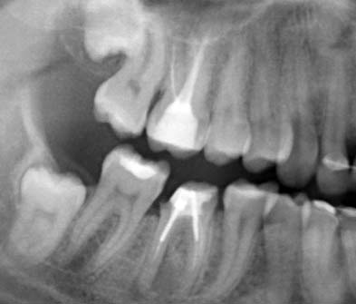
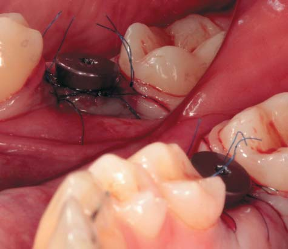
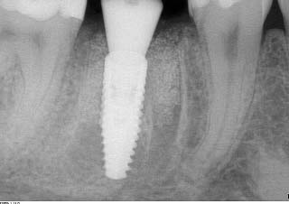
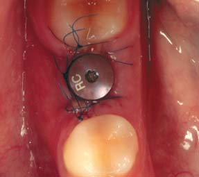
Фото 17-20.
Пацієнтці призначена системна антибактеріальна терапія протягом 7 днів, протизапальна терапія протягом 2 днів. Як місцевий антисептик, рекомендований розчин хлоргексидину біглюконат 0.2% тричі на день протягом 10 днів. Рекомендовано обмеження гігієни на нижній щелепі праворуч протягом 10 днів.
Шви зняли через 10 днів після операції. Протезування рекомендовано через 2 місяці після встановлення імплантата.
Пацієнтка зазначала, що мала почуття страху лише до операції, а потім було відчуття, що операція відбулася дуже швидко. Застосування ЗАКС дозволило провести маніпуляцію з більшим комфортом і меншими затратами часу на психологічну підготовку (фото 20).
Література
- European Academy of Paediatric Dentistry: Guidelines on Sedation in Paediatric Dentistry. A.-L. Hallonsten, B. Jensen, M. Raadal, J. Veerkamp, M.T. Hosey, S. Poulsen. http://www.eapd.gr/dat/5CF03741/file.pdf
- American Academy of Paediatric Dentistry. Guideline on Use of Nitrous Oxide for Pediatric Dental Patients. Council on Clinical Affairs, Clinical Guidelines. 2013. http://www.aapd.org/media/policies_guidelines/g_nitrous.pdf
- Sedation in children and young people 2010. Sedation for diagnostic and therapeutic procedures in children and young people http://egap.evidence.nhs.uk/CG112
- Malamed SF, Clark MS. Nitrous oxide-oxygen: a new look at a very old technique. J. Calif. Dent Assoc. 2003, 31(5) pp 397-403. www.drmalamed.com/downloads/index.html
- Mohamed TN, Younis AES et al. Immediate implants in lower posterior teeth with bone substitute and guided tissue membrane. Cairo Dental Journal. Vol 25, No 1; 2009:61-67.
- Coatoam G, Mariotti A. Immediate placement of anatomically shaped dental Implants. J Oral Implantol. 26:170, 2000.
- Chen ST, Darby IB, Reynolds EC, Clement JG. Immediate implant placement postextraction without flap elevation. J Periodontol. 80: 163-172, 2009.
- McAllister BS, Haghighat K. Bone augmentation techniques. J Periosdontol. 78: 377-396, 2007.